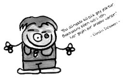

Üstün Dökmen (1954-)
Akademisyen, psikolog, yazar ve televizyon programcısı.
Dökmen, Hacettepe Üniversitesi Psikoloji bölümünden mezun oldu ve aynı bölümde uygulamalı psikoloji alanında mastır yaptı.
İçindeki çocuğun konuşmasına izin veren Dökmen, beden dilinin kişinin fikirlerini yansıttığı inancını yanlış bulur. Çocuklarımızın yara bandı olmadığını belirten Dökmen, anne ve babalık, eşler arası iletişim, meslek seçimi vb. birçok konuda da önemli öğütler verir. Adeta evinizin psikoloğudur. Seminerlerine gittiğinizde Cem Yılmaz’a güldüğünüzden daha fazla güleceğiniz, hem de gülerken çok şey öğreneceğiniz birisidir. Mesela aile içi iletişim kurarken nasıl davranılması gerektiğini şu anekdotla anlatır:
“Evinizde kocanıza bir iş yaptırmak için dövünüp durmayın, bağırıp çağırmalarınız da işe yaramaz. Örneğin bir gün evde köfteyi ben yaptım, malzemelerini koydum, yoğurdum, şekil verdim, kızarttım. Eşim yerken dedi ki: ‘Çok güzel olmuş, harika! Sen benden daha iyisin, ne olur bundan sonra köfteleri hep sen yap.’ O gün bugündür evde köfteleri ben yaparım.”
Başka bir anekdotta ise kadınların çilesine değinir:
“Pamuk Prenses avcıdan kurtulur. Yedi Cücelerin evine gider. Cüceler işe gidince onların ütüsünü yapar, yemeğini hazırlar, evi temizler. Yani prenses bile olsan ev işi yapmaktan kurtulamıyorsun!”
Ne demiş Dökmen…
• Fotoğrafçıda gülümseyin. Bir gün mutlaka alırlar selamınızı.
• Elemanınızda, çocuğunuzda, öğrencinizde bir beceri geliştirmek istiyorsanız iltifat etmelisiniz. Çalışana maddi, manevi iltifat etmek gerekiyor. Sırf sırt sıvazlamak da yetmiyor, sadece karnını doyurmak da.
• Yere düşen ekmeğin üstüne basan insan görmedim ama yere düşen insanı tekmeleyen çok kişi gördüm.
• Neyin büyük, neyin küçük olduğu göreceli… Belki bize, insana düşen şey, önemliyle, önemsizi ayırt edebilmek.
• Çocuğumuz düşüp kafasını masaya çarpınca biz hemen masayı döveriz. Çocuk, masa orada durmasa kafasını çarpmayacağını sanır ve büyüdükçe yaptığı her hatayı yükleyecek birini veya bir şeyi mutlaka bulur.
Bir şiiri...
Kıyılar boyunca yürüdün yıllar yılı
Çakıl taşları topladın ve midye kabukları…
Geçip gitmesinler diye günler
Çekmecelerde sakladın.
Topladığın onca pul, kibrit, taş, kabuk
Bir kıyamet gününde gelip seni bulacaklar;
“İşte!” diyecekler “bizi biriktiren çocuk”
Ellerinden öpecekler.
